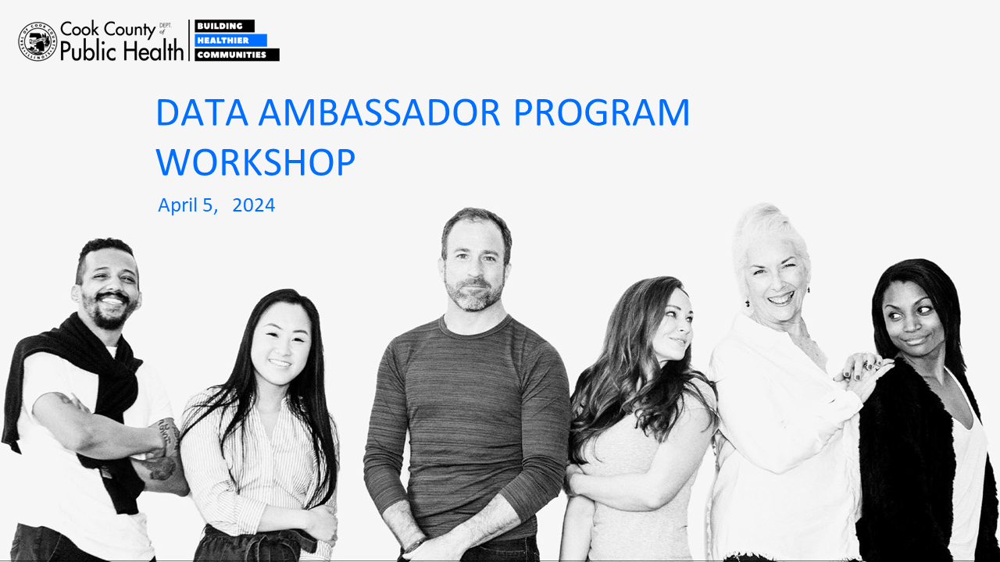

Background
The Cook County Health Atlas
Using startup funds from CDC’s Health Equity Grant, the Cook County Department of Public Health (CCDPH) collaborated with the University of Illinois Chicago’s PHAME Center and Metopio to design the online County County Health Atlas. Launched in late 2022, the atlas serves as an interactive platform for exploring and sharing various health-related documents, data, and measures concerning the suburban residents of Cook County. The primary functions of the atlas include:
- Visualization and Download of Health Data: It transforms complex health data into understandable, visually engaging formats such as maps, tables, and charts, making it easier for users to analyze, interpret, and download data.
- Enhanced Accessibility: By being online, it ensures that CCDPH’s health data is accessible to a wide audience, including policymakers, healthcare professionals, researchers, and the general public, regardless of their geographical location.
- Informed Decision-Making: It aids in evidence-based decision-making by providing up-to-date information on various health indicators, such as disease prevalence, public health outcomes, risk behaviors, and social determinants of health. The information on the atlas can be used to explore trends, assess needs, and allocate resources effectively.
- Public Health Surveillance, Research, and Analysis: The Cook County Health Atlas can also serve as a tool for monitoring public health issues, identifying health disparities, and evaluating health interventions.
- Education and Awareness: The atlas plays a significant role in raising awareness about health issues, preventive measures, and healthy behaviors by presenting data in an accessible and engaging manner.
- Collaboration and Sharing: The platform also facilitates collaboration among healthcare professionals, policymakers, researchers, and community-based organizations by providing a central repository of health data that can be easily shared and discussed.
Data Ambassador Program Workshop
The Data Ambassador program is a public health workforce development initiative that bridges the expertise of community-based organizations (CBOs) and public health epidemiologists to disseminate and improve the Cook County Health Atlas while increasing the use of population health data by community partners.
CCDPH hosted a Data Ambassador Program Workshop in April 2024. The workshop included representatives of multiple community-based organizations (CBOs) to learn about how to use the Cook County Health Atlas in their work. Specifically, the participants learned about:
- The kinds of health data are available on the Cook County Health Atlas;
- How to navigate the atlas, explore health indicators, and use data visualization tools;
- How to create and download custom maps and tables; and
- How to compare health outcomes across population groups toward advancing health and racial equity

The hands-on, in-person workshop was organized into three modules: (1) exploring health indicators; (2) grant writing and fundraising; and (3) time period comparisons. This online document steps through the material presented during the in-person workshop and provides additional atlas-related resources. This Data Ambassador Workshop guidance document was distributed at the workshop and includes step-by-step instructions in a printable format.
Input gathered from the Data Ambassador Program Workshop participants is being used to inform the design of a train-the trainer program for nonprofit professionals who work with CBOs serving suburban Cook County.
Exploring Health Indicators
Custom reports
In addition to the data, maps, and tables on the atlas, CCDPH, makes available topic-specific pages on the platform that provide useful information on emerging health issues using historical and updated information. These topic-specific pages will come in the form of program pages, data briefs, and reports.
The Change Institute Chronic Disease Measures exemplifies one of the project pages available on the atlas. The page provides insights concerning patterns of four chronic diseases within Cook County—cancer, diabetes, heart disease and stroke—which collectively account for nearly half of all deaths.
Similarly, the Injury Burden report provides a summary of the burden of injury within suburban Cook County, how we define injury and types of injury as well as links to injury related health indicators. Additionally, this document describes the methodology for creating indicators.
Search indicators
The atlas has over 400 indicators derived from federal, state, and local data sources. There are multiple ways to search and explore these health indicators via the website’s landing page and the “indicator” option on the left navigation panel. Follow the steps below to examine a specific injury-related indicator on the atlas. Review the associated video for additional assistance.
Visualize and stratify indicators
Each indicator can be explored through interactive maps and charts. Many indicators can also be examined across different population groups such as by race, ethnicity, sex, and/or age group. Follow the steps below to visualize and stratify a specific injury-related indicator on the atlas. Review the associated video for additional assistance.
Grantwriting and Fundraising
Create custom tables
Custom tables can be created to help nonprofits and other organizations efficiently communicate differences in health outcomes across places and population subgroups in suburban Cook County.
Create custom maps
Similarly custom maps demonstrate spatial variations of need and help build a compelling case for the potential impact of proposed initiatives.